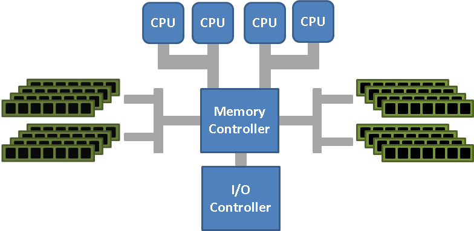

HPC / Systems
TopoSteal: NUMA-Aware Work-Stealing Runtime
Topology-aware scheduler using hwloc + PMU feedback. 1.17x speedup, 85% local steals, beats OpenMP on SpMV (SuiteSparse audikw_1).
C
hwloc
perf_event_open
NUMA